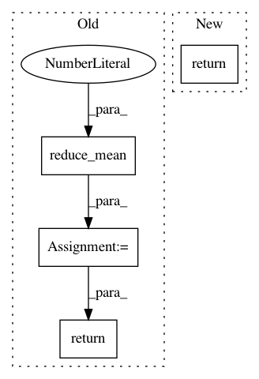

a0f77cc8b87512e691a7c22b6fb9ba60f603b632,layer/reparameterization_trick.py,ReparameterizationLayer,layer_op,#ReparameterizationLayer#Any#,36
Before Change
stochastic_parts = []
for p in range(0, self.number_of_samples):
stochastic_parts.append(noise_like(means, self.prior))
noise_sample = tf.reduce_mean(tf.stack(stochastic_parts), axis=0)
output_tensor = means + tf.exp(0.5 * logvariances) * noise_sample
return output_tensor
After Change
noise_sample = noise_shaped_like(shape_of_expanded_sample, self.prior)
noise_sample = tf.reduce_mean(noise_sample, axis=0)
return means + tf.exp(0.5 * logvariances) * noise_sample
In pattern: SUPERPATTERN
Frequency: 4
Non-data size: 4
Instances
Project Name: NifTK/NiftyNet
Commit Name: a0f77cc8b87512e691a7c22b6fb9ba60f603b632
Time: 2017-07-04
Author: r.gray@ucl.ac.uk
File Name: layer/reparameterization_trick.py
Class Name: ReparameterizationLayer
Method Name: layer_op
Project Name: reinforceio/tensorforce
Commit Name: 004a31a0307980fd1659f6f65cfe6eee39d8c121
Time: 2018-02-09
Author: k@ifricke.com
File Name: tensorforce/models/dpg_target_model.py
Class Name: DPGTargetModel
Method Name: tf_loss_per_instance
Project Name: reinforceio/tensorforce
Commit Name: 1c7c76e3ac8d1c0b10a5f91efcf56d804d8bca26
Time: 2017-07-25
Author: aok25@cl.cam.ac.uk
File Name: tensorforce/core/distributions/gaussian.py
Class Name: Gaussian
Method Name: kl_divergence
Project Name: reinforceio/tensorforce
Commit Name: 1c7c76e3ac8d1c0b10a5f91efcf56d804d8bca26
Time: 2017-07-25
Author: aok25@cl.cam.ac.uk
File Name: tensorforce/core/distributions/gaussian.py
Class Name: Gaussian
Method Name: entropy